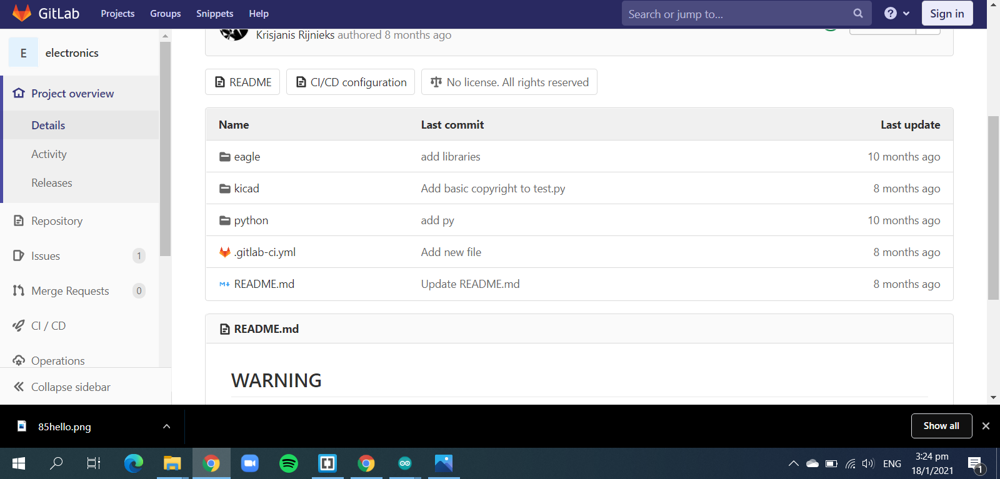
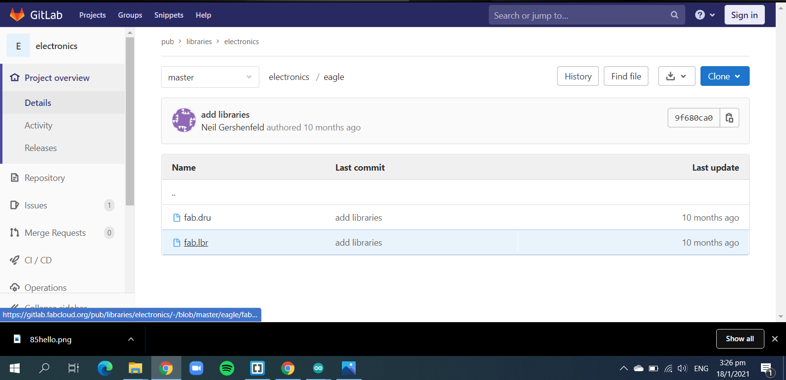
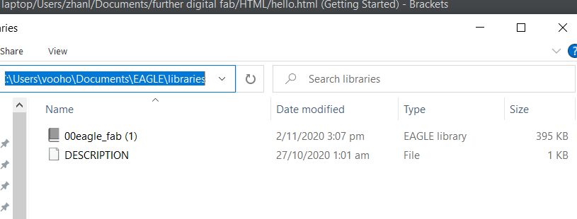
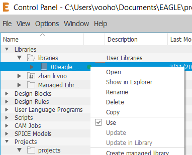
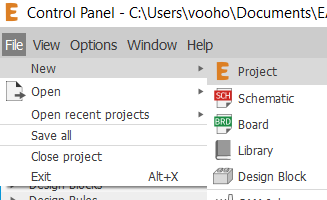
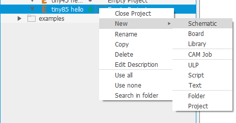
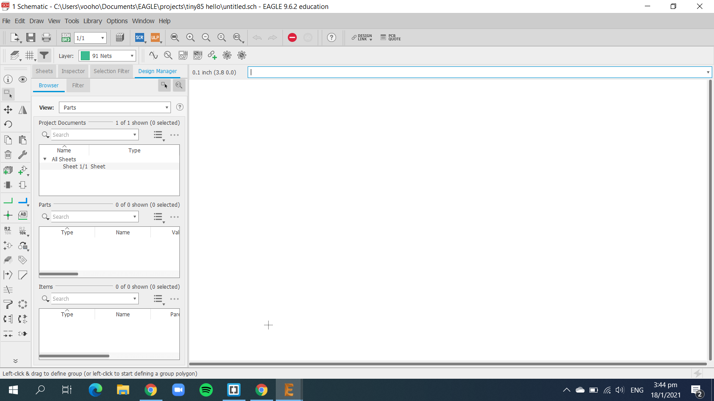

Attiny85 hello board
In this assignment, we will be making our own Attiny hello board to program and play around.
First we are going to download the library for fablab in EAGLES, there are some components that we use in fablab that are in a specific size.
First we go to https://gitlab.fabcloud.org/pub/libraries/electronics.
Now we click the eagles folder and download 'fab.lr'.
After downloading it, transfer the file into EAGLES library, to do it, go to documents->EAGLES->library and paste it there.
Now we can rename it so later in EAGLES find it easier, I renamed it to 00eagkefab.
Now we enter into EAGLES and we expand the library section, and we should be able to see the library, right click on it and make the to tick the use box, now that library id in use and we can start designing the board.
Now we click on create new project, then create new schematic.
 now we enter into the schematic page, where we can start putting in the components, one thing to take note to make sure to FREQUENTLY SAVE YOUR PROGRESS, this is so you can always start from where you have stopped in case of any sudden disconnection from the software.
Now we can start designing, first we go to the add parts command, and search for our components.
Now we got the components, we can connect them together to complete the circuit, there are 2 ways you can connect the components. the first way is the traditional click and connect, the second is to name the create shortr wires and give them names, once you give them names, EAGLES will ask if you want to connect the two together, and you can just click yes and finish.
After connectiing components, naming and giving values for your resistors, capacitor, and LED, you can use the ERC function to check if you missed anything.
Now once it is connected, switch it from schematic to boaard, this will now give you the function to design the baord now. Now in board, we can arrange the components and deal with the rats nest you are going to get at first, it is important to ensure that there are as little intersections as possible, so later routing the traces will be easier.
Now you can go to DRC and adjust some values, they are shown below:
After setting the values, you can use DRC to check for any design flaws and when there isn't, you can start generating the gcode.
There are 2 ways to generate the gcode, the first way is using EAGLES to generate, the second is to save the design as PNG and use mods to generate. I am going to use mods to generate the code as it is a lot simpler and easier for me to do, but our lecturer has given us an advice, if we are using EAGLES to design, we should use EAGLES for everything.
To save the schematic as PNG, we need to first export it as an image and set the DPI to 1000, then we also need it to be monocolour so it will be black and white. We will need to save 2 files, one for the traces and one for the outline.
After saving the files, go to mods and create the .nc code, then we use the stepcraft machine to cut it out, and solder the components.
The finished board should look something like this: